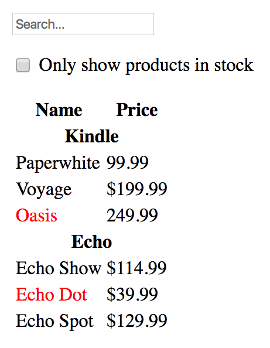
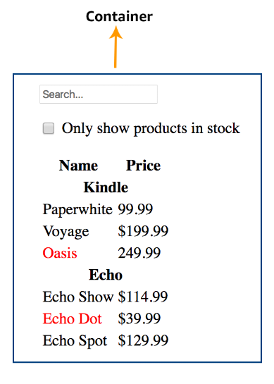
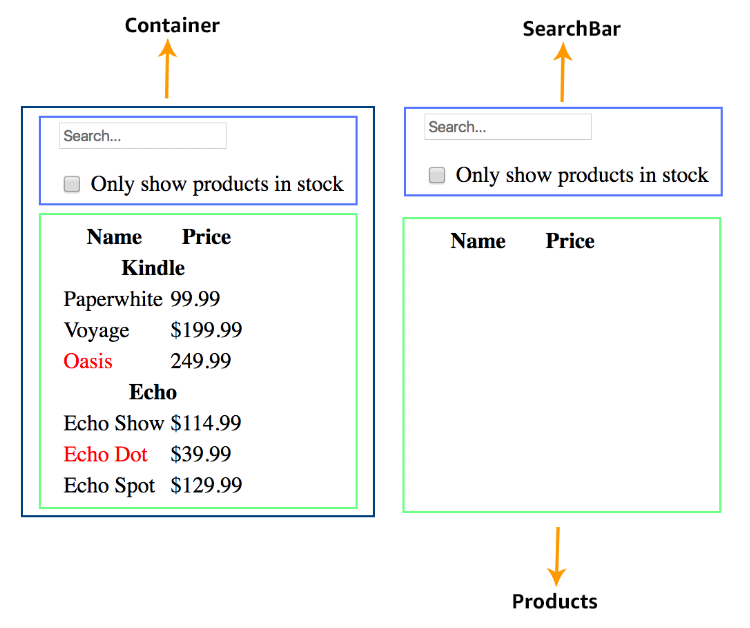
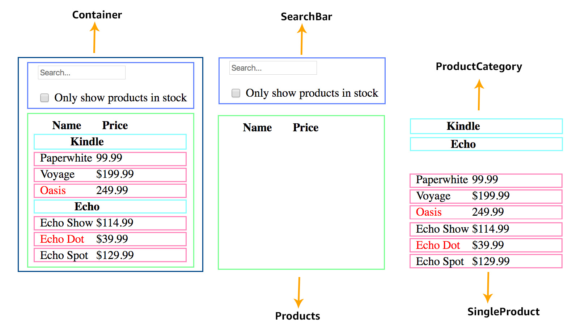

name: inverse layout: true class: center middle inverse # Thinking in React --- --- name: code layout: true class:code --- ## Mock up  --- # Sample Json File - http://www.json-generator.com/api/json/get/bTBLpQKoSW?indent=2 ```javascript [ { "category": "Kindle", "products": [ { "price": 99, "stocked": true, "name": "Paperwhite" }, { "price": 199, "stocked": true, "name": "Voyage" }, { "price": 249, "stocked": false, "name": "Oasis" } ] }, { "category": "Echo", "products": [ { "price": 114, "stocked": true, "name": "Echo Show" }, { "price": 39, "stocked": false, "name": "Echo Dot" }, { "price": 129, "stocked": true, "name": "Echo Spot" } ] } ] ``` --- # Break The UI Into A Component Hierarchy - Single responsibility principle - A component should ideally only do one thing - If it ends up growing, it should be decomposed into smaller subcomponents --- ## How can we split into Components? ---  ---  ---  --- ### Component Hierarchy - Container - SearchBar - Products - ProductCategory - SingleProducts ---